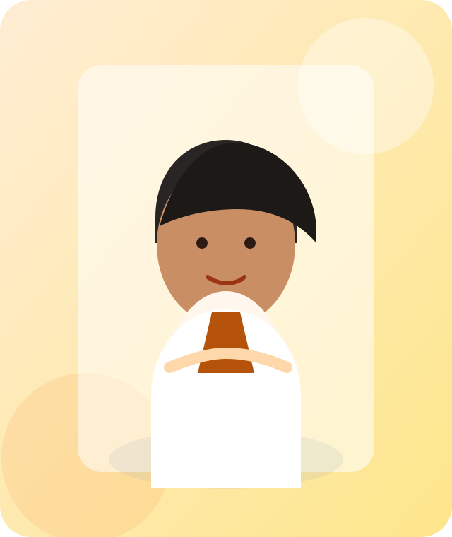

Cardiology
Dr. Ravi Kumar
Lotus Heart & Wellness Clinic
Dr. Ravi Kumar provides preventive and long-term cardiac care with a focus on clear communication, practical treatment plans, and patient-friendly follow-up.
Open Unique DemoEvery doctor profile now uses a different layout system, so the showcase feels like six separate premium website concepts instead of one repeated template.
Cardiology
Lotus Heart & Wellness Clinic
Dr. Ravi Kumar provides preventive and long-term cardiac care with a focus on clear communication, practical treatment plans, and patient-friendly follow-up.
Open Unique DemoGynecology
Aster Women & Wellness Studio
Dr. Ananya Sharma combines evidence-based women’s health care with a calm, modern clinic experience designed for trust, privacy, and continuity.
Open Unique DemoDermatology
The Urban Skin Atelier
Dr. Arjun Mehta is known for refined aesthetic dermatology and long-term skin health programs tailored to busy urban professionals.
Open Unique DemoPediatrics
MindSpring Child Development Center
Dr. Meera Iyer focuses on thoughtful pediatric care that supports both children and parents with clarity, warmth, and reliable follow-through.
Open Unique Demo
Orthopedics
Precision Ortho & Sports Lab
Dr. Kabir Singh leads a premium orthopedic and sports recovery practice built around precise diagnosis, rehabilitation planning, and durable outcomes.
Open Unique DemoCosmetic Dentistry
Serene Dental Lounge
Dr. Sana Farooq’s practice blends cosmetic precision with a hospitality-first clinic atmosphere for patients seeking confidence and comfort.
Open Unique Demo